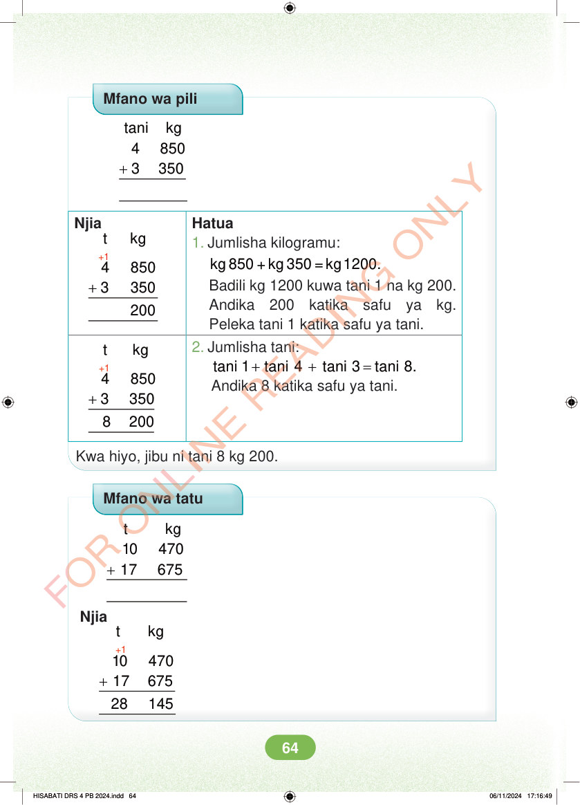

Mfano wa pili + tani kg 4 850 3 350 Njia t kg +1 + 4 850 3 350 Hatua 1. Jumlisha kilogramu: kg 850 + kg 350 = kg 1200. Badili kg 1200 kuwa tani 1 na kg 200. Andika 200 katika safu ya kg. Peleka tani 1 katika safu ya tani. t kg +1 2. Jumlisha tani: + + = tani 1 tani 4 tani 3 tani 8. Andika 8 katika safu ya tani. + 4 850 3 350 8 200 Kwa hiyo, jibu ni tani 8 kg 200. Mfano wa tatu + t kg 10 470 17 675 Njia +1 t kg + 10 470 17 675 28 145 HISABATI DRS 4 PB 2024.indd 64 HISABATI DRS 4 PB 2024.indd 64 06/11/2024 17:16:49 06/11/2024 17:16:49